日々、想ふ
〜過去感じたことがつれづれと〜
（できるだけ最大化してお読みください）
日々、想ふ
デジカメ帰還。８/１５
ちょっと遅れ気味の日記更新、タケユキです。
今日の夕方に大阪に戻ってきました、
今回も二泊の短い帰省で。
これでいちおう夏休み
最後の帰省になる予定です、
ってこの夏で３回も帰省してりゃ回数としては十分か。
実家に帰ったついでにケータイ機種変してみました(SO506iCってやつ)。
それと修理に出してたデジカメもメーカー保証がきいて
タダで新しいカメラと交換になって帰ってきました。
そんな感じで身の回りに新しいものが増えてちょっとうれしい夏休み。
バイトが入ってたんで短い帰省になったわけだけども
バイトは全部夕方から。
お昼は何して過ごそう。
今日の家計簿：
| 昼飯 | ５００円 |
| デジカメ保護ケース | ３０００円 |
| 計 | ３５００円 |
たぶん犯人はうちでよくカレーを食うやつ。８/１４
帰省二日目です一言言いたくて急遽更新、タケユキです。
帰省するってことは毎日使うであろう日用品は
持って帰らなくてはならないわけです。
財布とかコンタクトとか、
携帯の充電器とか。
いや別に携帯の充電器持って帰るの忘れたわけじゃないんですよ、
家を出る前に持ち物確認してカバンの中に
充電器ちゃんと入れました、
それで広島帰って寝る前に充電しようとしたんですよ、
充電器コンセントにさしてケータイにつなげようとしたら、
・・・ささらねえ・・。
酔ってんのかなとかって思ったりもしたけどやっぱりささらない。
アダプターの部分をよく見たら俺がいつも使ってるやつと形が違う。
誰だうちに充電器置いて帰ったやつはーー！(ノД`)
誰のかわからんけども間違えて持って帰ってきたみたいです・・。
もちろん自分の充電器は大阪・・。
通常日記＋代打日記＝帰省。８/１３
うるさいタケユキが帰って来ました。
三丁目です。
昨日オールだったので、七時に帰宅。それから、
十二時までに携帯などで起こされること４回（うち
２回はたけゆき）。全然寝れやしません。タケユキ
にたたき起こされ、横では太鼓を（大阪から持参
（間違いなくあほ））たたかれ、たたかれ放題の一
日です。さらにこれから飲み！！そのときの話は、
また夜に。。。
******************************************************
広島っていいね☆僕は
さんまだよ！
たけゆきと３丁目とぐっちと僕で焼肉食べました。
にんにくおいしいね
ボーリングしました。
1位はなんとたけゆき！
今日の戦利品→チョッパー・ミッキー・プーさんのぬいぐるみ、
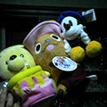
あとそれと銭形警部のライター。
銭形６００円なり。こっから極力広島弁。今日のメンバーは高校１年のときの同じクラスの仲いいやつらなんよ。
春にもみんなで遊んだんじゃけど、今回はみんな都合が悪いみたいで、
おっさん（この日記にも何度か登場）とかダニエルとか学とかは来れんかったんよ！
じゃけぇ今日は３丁目の家で酒盛り（三次ベッケンビールで）なんよ。
わしは酒飲めんけぇアクエリアス。ぐっちは今バイト先の会議の途中。
はよー帰ってきんさいよ！
そんなこんなで今から桃鉄をするけぇのぅ。
今日の更新これまで！
******************************************************
というわけで今日は代打日記書いてみたいって友達が更新しました、タケユキです。
俺は今日朝６時に大阪の家を出て電車で５時間強かけて
広島に到着。
お盆の帰省時期と重なって
大阪・神戸あたりだと全然座れない。
でも姫路を過ぎたあたりからだんだん人が減っていって
岡山過ぎたくらいでは楽勝で椅子に横になることができるようになったんで
１、２時間電車の中で横になって寝てました。
うんちょっとマナー悪い、けど人いないからまぁその辺は関係なし。
それと
上の日記にあったように太鼓の達人のコントローラー２つ
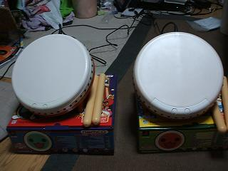
かばんに突っ込んで帰ったんで荷物激重。
しかもこれ持って帰ってたのにボーリングやった帰りに
ゲーセンでも太鼓の達人をやった。
何のために太鼓の達人もって帰ったのか自分でも意味がわかりません。
今日もこのまま友達の家に泊まるんでいつものごとく帰省したのに
実家に帰らないまま帰省初日が過ぎそうです、
ってか過ぎました、今もう夜中の２時過ぎです。
でもまだ俺の一日目は終わりそうじゃありません。
周りが広島弁だらけでちょっと懐かしさあふれてます。
少し心の傷も癒えてきました、次いつ更新できるかわかりませんが
おやすみなさい。
今日のボーリング；最高スコア
１５４！
今日の家計簿：
| 焼肉 | ２５００円 |
| 宅飲み用の買い物 | １０００円 |
| ボーリング | １０００円 |
| 計 | ４５００円 |
夏といえば。８/１２
肩がヒリヒリします、タケユキです。
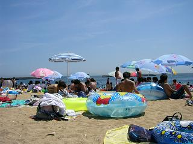←ヒリヒリの原因。
今日は兵庫の須磨海岸に行ってきました。
関西の海水浴場の中でかなり大きい須磨海岸。
上の写真の通りこれでもかってくらいの人。
浜辺から海までほぼびっしり人がいて
ビーチボールとか使う人は後ろのほうで
ちょろっとやる程度しかスペースもないくらいでした。
海に来たんだから泳いでみるも
入って３分もしないうちに友達が
「いてえ！なんか腕いてえ！」
陸に上がってみるとなんか腕にぶつぶつが。
クラゲにやられたのか何にやられたのか分からんけども
海に入る度に誰かが、
「うわっ！なんか腹がチクチクする！」
「なんかまた腕がいてえ！」
海に入るのも命がけだった。
やっと夏らしさが出てきた夏休み。
明日から実家に帰るんで更新滞りがちになりそうです。
追伸：同じ大学の人にしか関係ないんだけど
３セメの成績交付＆４セメ履修申請の教室が掲示されてたんで載せときます。
俺の分かる範囲でここ見てるだろう人の学科は調べときました。
クラス別懇談会
| 学科 | コース | 時間 | 場所 |
| 情報科学科 | 計算機・ソフトウェアコース | ８/２５ １０：３０〜 | 共Ａ１０４ |
| 情報科学科 | 数理コース |
８/２６ １０：３０〜 | 基・Ｊ棟６１７ |
| 電子物理科学科 | 物性物理学コース | ８/２６ １３：００〜 | 基４０３ |
| 電子物理科学科 | エレクトロニクスコース | ８/２６ １０：３０〜 | 共Ａ２１２ |
| システム科学科 | 生物工学コース | ８/２６ １０：００〜 | 基３０４ |
さらに追伸：これは同じ学科の人にしか関係ない話なんだけど
電子回路の試験の結果が出てたんで載せときます。
夏休み入って学校まで掲示見に来るのが
めんどい自宅生なんかは参考にどうぞ→
ここから
今日の家計簿：
| 交通費 | １２８０円 |
| 昼食 | ５９９円 |
| ビーチ用シート | ２００円 |
| 計 | ２０７９円 |
私信〜下の階へ住む住人へ〜。８/１１
暑いっす、タケユキです。
今日は教習行って久しぶりに運転して
夕方からバイト行ってきました。
バイト終わって戻ってきたら
同じマンションの下の階に住む友達の弟が
大学見学で大阪に来てたんでお邪魔してみた。
とりあえず一緒に太鼓叩いてみた。
女の子の好みを聞いてみた、
兄とかけはなれていた。
兄は
少しおかしいみたいだ。
でももっと自信を持て、兄。
今日はバイトの給料が入ったんで
弟君と三ツ矢サイダー(1.5L)を空けた。
今年高校三年生、兄とはあんま似てない弟君、がんばれ受験。
今日の家計簿：
| 三ツ矢サイダー(1.5L)２本 | ３３２円 |
| 食料等 | １１５７円 |
| 計 | １４８９円 |
夏の夜の幕明けに。８/１０
ついに、ついに、やっとこの時がきました、
待ちに待ったサマーバーケーションです、
サマーバケイションですよ、
日本語で言うと夏休み突入です、タケユキです。
というわけで夕方からサークルのメンバーで集まって
肉祭りと太鼓の達人大会をやってました。
ミノ、レバー、ホルモン、牛バラ、豚肉（しょうが焼き用）、
肉祭りの名に恥じないように肉の種類を取り揃え、
夏休みのスタートにふさわしい晩餐になりました。
予定が合わなかったり帰省してしまってたりと
参加できなかったメンバーもいたんで今月末か来月にはまた開きたいと思います。
サッカーサークルですが４月末以来サッカーをやっていません、
夏休み、サッカー目的で集まる予定もありません。
９月に旅行に行くくらいです。
これはこれでサークルらしくてよし。
部屋が焼肉の匂いが染み付きそうなのはよくないです。
今日の一枚：肉祭りの肉の集まり(微妙に掛け言葉)。
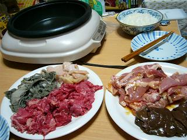
今日の家計簿：
| 肉祭りの出費 | １０００円 |
| 計 | １０００円 |
あと一日。８/９
風呂入ってから体拭く時左腕から拭く男、タケユキです。
今日はサークルの友達に数学を教えてもらって
レポートの続きをがんばってみたり。
明日のテストが終われば、夏休み。
レポ日和。８/８
太鼓の音がうるさくて勉強が進みません,タケユキです.
今日は朝からレポート,夜からテスト勉強を始めてるわけだけども
進んでいるのかどうかわかりません.
なぜか近くから太鼓の音が聞こえてきます.
今日は祭りがあるはずないんだけど・・.
あと二日経てばやっと夏休み,短い更新が続きますがご容赦を.
ちなみにレポート書いてたせいで文章中の句読点が,
いつもの「、」や「。」じゃなくて「,」や「.」になってます.
誰だったか忘れたけど半角句読点(「,」「.」)使ったレポートは
できるやつが書いたレポートって聞いたんでこっち使ってます.
レポ書くことがある人はお試しあれ.
１０００万ドルの夜景。８/７
アジアカップ決勝、日本の二点目はハンドですよね？タケユキです。
今日は神戸で最大の花火大会「みなとこうべ海上花火大会」
に行ってきました。
夕方くらいに神戸に到着、
まず
モザイクに行っていろんなお店見てきました。
アジア雑貨がいっぱいあるお店があったり、
いろいろおもしろそうだったけど
花火の場所取りしたかったんで５時前にはメリケンパークへ。
モザイクからメリケンパークまでの途中に神戸ポートタワーなるものがあった。
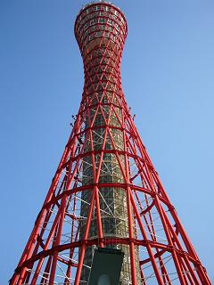
メリケンパーク
暑すぎたんでシートを敷いて建物の中に退避。
夕方まで建物の中で過ごして日が落ちるまで待つ。
日が落ちたんで外に出ると外はもう人、人、人。
シートを置いた場所が分からなくなり２０分さまよう。
２０分後なんとか見つかり、花火スタート。
この時にはもう空は暗くなり神戸１０００万ドルの夜景が姿を
見せ始める。
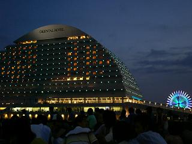
景色に見とれているうちに花火がスタート。
打ち上げ花火やいろいろな仕掛け花火が夜景の空を彩る。
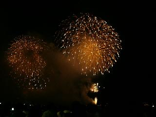
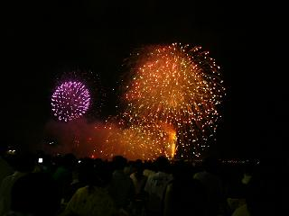
仕掛け花火の一つで「ポケモン花火」っていうのがあって、
こんな感じの花火があがってた。
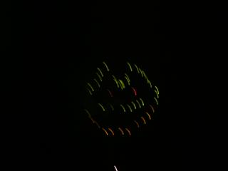
うん微妙、ピカチュウっぽくない。
でもやっぱり神戸最大の花火だけあってすごい迫力だった。
夜景もそれに負けないくらい光り輝いて、
こんな街に住みたいと思ってみたり。
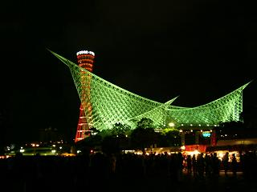
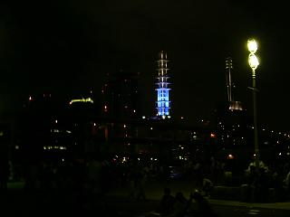
神戸には他にも中華街や元町高架下とか行くところがたくさんあるんで
今年中には行ってみたい。
今日の家計簿：
| 小説二冊 | ４２０円 |
| 花火大会に使ったお金 | 約２０００円 |
| 計 | 約２５００円 |
フライング２回は失格。８/５，６
デジカメ液晶割れた、そういうわけで修理に出してきました、
夏休みはインスタントカメラで過ごすことになるかもしれません、タケユキです。
というわけで昨日広島帰ってきました、
今日大阪戻ってきました、
レポート、がんばります。
今日の家計簿：
| 青春18切符 | １１５００円 |
| いろいろ（本やら花火やら食費やら） | 約３０００円 |
| 計 | 約１５０００円 |
一度やれば二度も同じ。８/４
レポートやらんと、タケユキです。
せっぱ詰ってます、でもなぜか身支度してます、
マジで時間がないので今日の更新はこれまでです。
ですます調で書いてみました。８/３
残すところテストはあとひとつ、
でもなぜかそのテストは１０日にあります、
それまで授業はありません、
これでも夏休みじゃないってどうなんですか、タケユキです。
これだけ聞いたらもう夏休みみたいなもんだと思いそうですが、
なんか知らん迷惑なレポート課題が残ってて
のほほんと過ごすわけには行きません。
てなわけで今日レポートがんばろうと思ってたら
久しぶりにお腹を下したらしく
反復横とびかと勘違いしそうなくらい
トイレと部屋とを行ったりしてました。
反復横とびは言いすぎでした、嘘です。
でもそのくらい行ったり来たりしてたって話です、比喩です。
また波がやってきました、トイレ行ってきます、
ご飯食べてる人がいたらごめんなさい。
ってご飯食べながらネットする人はおらんか。
久々の大出費。８/２
今日もやっぱりテスト勉強、
テスト期間中に俺はスロットなんて行きません、タケユキです。
今日はテスト終わった後に梅田に出てきました、
取り寄せを頼んでたmp3プレイヤーのリモコンが届いてたので購入、
これでやっと満足に音楽が聴けそうです。
明日もテストがあるんで勉強してます、
部屋から太鼓の音が聞こえてくるのは気のせいだと言いたい。
今日の家計簿：
| mp3プレイヤーのリモコン | １９０７円 |
| 計 | １９０７円 |
図書館。８/１
８月になりました。
世間ではやれ夏だ、やれ夏休みだと騒いでおりますが
僕は今テストに向けて勉強中です。
前期なまけた分を取り戻すべく猛勉強。
分からない部分が出てくる度に、
「次のセメスター（学期）はマジメになろう」
半年に一回やってくる試験期間に毎回同じことを思っています、
でも思ってるだけで行動に移せないのはみんなも同じですよね？
とりあえず同意を求めてみます、タケユキです。
というわけで勉強をするべく昼から図書館へ。
勉強に使う資料持って行くの忘れました。
図書館においてある今日の新聞を読んで、帰ってきました。
これでも勉強した気になれるってのはある意味すごいかもしれません。